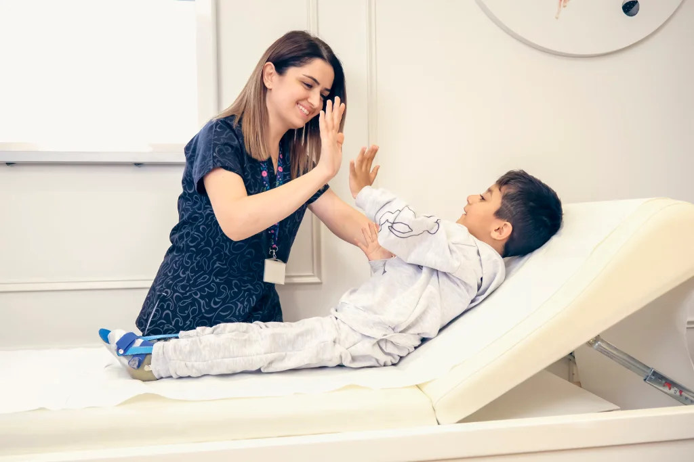

اورژانس ۲۴ ساعته
۰۹۱۷-۳۲۱-۰۹۶۰
۲۵K+
بیمار درمان شده
۹۸٪
میزان رضایت
ارائهدهنده خدمات درمانی مورد اعتماد
برترین خدمات پزشکی از سال ۱۳۶۴
ما با بهرهگیری از تخصص و تجربه، مراقبتهای پزشکی با کیفیت بالا و توجه ویژه به بیمار ارائه میدهیم. تلاش ما، بهبود زندگی بیماران است.
۳۵+
سال تجربه
۱۵۰+
متخصص پزشکی
۱۲
شعبه کلینیک
برتری در مراقبتهای درمانی از سال ۱۳۶۴
ما متعهد به ارائه مراقبتهای پزشکی در سطح جهانی از طریق نوآوری، همدلی و تعهد بیوقفه به سلامت و بهبود بیمارانمان هستیم.

دارای اعتبار JCI


رویکرد بیمارمحور
هر برنامه درمانی با دقت و بر اساس نیازها و سابقه پزشکی هر بیمار طراحی میشود.
فناوری و تصویربرداری پیشرفته تشخیصی
پزشکان و متخصصان دارای بورد معتبر
برنامههای جامع توانبخشی
خدمات اورژانس و مراقبت ویژه ۲۴ ساعته
۹۸%
رضایت بیماران
۳۵K+
زندگیهای بهبود یافته
بخشهای شاخص
با بهترین خدمات درمانی در حوزههای مختلف پزشکی در خدمت شما هستیم
پزشکی اورژانس
خدمات اورژانس ۲۴ ساعته
ارائه خدمات سریع و دقیق اورژانس برای انواع شرایط حیاتی، با تجهیزات پیشرفته و تیم متخصص آماده در تمام ساعات شبانهروز.
پاسخگویی اورژانسی ۲۴ ساعته
پشتیبانی پیشرفته حیات
متخصصان مراقبت از تروما
قلب و عروق
تشخیص و درمان بیماریهای قلبی با استفاده از تکنیکها و فناوریهای روز دنیا.
15+
متخصص
500+
عملیات درمانی
نورولوژی
درمان بیماریهای سیستم عصبی با دانش و تجربه متخصصان برجسته.
8+
متخصص
200+
درمان انجام شده
جراحی
انجام انواع جراحیها با بالاترین دقت و کمترین عوارض ممکن.
12+
جراح
1000+
عمل جراحی
اطفال
مراقبت ویژه از سلامت جسمی و روانی کودکان با متخصصان اطفال باتجربه.
10+
متخصص اطفال
2000+
بیمار کودک
چشمپزشکی
تشخیص و درمان طیف وسیعی از بیماریها و اختلالات بینایی.
6+
چشمپزشک
800+
معاینه چشم
پوست و مو
درمان بیماریهای پوستی و ارائه خدمات مراقبتی زیبایی با تجهیزات پیشرفته.
۷+
متخصص پوست
600+
درمان پوستی
مشاهده همه بخشهای پزشکی ما
ما آمادهایم تا در تمام حوزههای درمانی، بهترین خدمات را به بیماران ارائه دهیم.
مشاهده همه بخشهاخدمات شاخص
ارائه بهترین خدمات درمانی در حوزههای گوناگون سلامت و پزشکی

تخصص قلب و عروق
تشخیص و درمان بیماریهای قلبی با بهرهگیری از روشهای نوین، فناوری پیشرفته و تیم متخصصان با تجربه.
بیشتر بخوانید
مراقبتهای نورولوژی
درمان و پیگیری بیماریهای سیستم عصبی با بهرهگیری از تجربه پزشکان متخصص و امکانات مجهز.
بیشتر بخوانید
جراحی ارتوپدی
انجام انواع جراحیهای استخوان، مفصل و ستون فقرات با تجهیزات پیشرفته و کمترین زمان بهبود.
بیشتر بخوانید

مراقبتهای اطفال
پیگیری سلامت جسمی و روانی کودکان با تیمی از متخصصان اطفال باتجربه و حرفهای.
بیشتر بخوانید
درمان سرطان (انکولوژی)
ارائه روشهای مؤثر پیشگیری، تشخیص و درمان انواع سرطانها با حمایت روانی و جسمی بیماران.
بیشتر بخوانید
خدمات آزمایشگاهی
انجام آزمایشهای تخصصی و تشخیصی با استفاده از دستگاههای دقیق و تیم کارآزموده.
بیشتر بخوانیدپزشک خود را بیابید
با خدمات حرفهای و شبکهای از پزشکان معتبر در تمامی حوزههای تخصصی در کنار شما هستیم
پزشک ایدهآل خود را پیدا کنید
ارتباط مستقیم با شبکهای گسترده از متخصصان تأیید شده در تمامی رشتههای پزشکی

مراقبت استثنایی در مسیر سلامت شما
با خدمات جامع سلامت که همراه با همدلی و تخصص ارائه میشود آشنا شوید. تیم متعهد ما به ارائه مراقبت پزشکی شخصیسازیشده که شما را در اولویت قرار میدهد متعهد است.

۲۵+
سال تجربه
۱۵هزار+
بیمار راضی
۵۰+
متخصص پزشکی
۲۴/۷
خدمات اورژانسی
برتری در قلب و عروق
مراقبت پیشرفته قلب با تجهیزات تشخیصی مدرن و پزشکان متخصص قلب با تجربه، متعهد به سلامت قلب شما.
بیشتر بخوانیدمرکز نورولوژی
خدمات جامع سیستم عصبی شامل تشخیص و درمان بیماریهای مغز، نخاع و اعصاب محیطی.
بیشتر بخوانیدمراقبت پیشگیرانه
برنامههای غربالگری سلامت و بهداشت پیشگیرانه برای جلوگیری از بیماری و حفظ سلامت بهینه.
بیشتر بخوانید